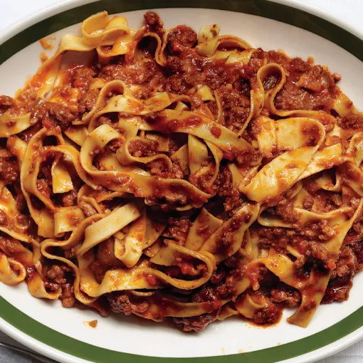

Traditional Ragu Bolognese

Description
Super delicious and simple traditional ragu bolognese recipe.
Ingredients:
- Olive Oil
- 1kg Beef Mince
- 700g Passata
- 3-5 Bay Leaves
- 2 Medium-large onions
- 2 Carrots
- 2 Celery sticks
- 2 Cups of Wine (optional)
- 2 Cups whole milk
- Pasta Of Your Choice (penne and tagiatelle work well, spaghetti is undesirable)
- Salt and Pepper to Taste
Steps
-
Saute onion, carrot and celery in a generous amount of olive oil at least until onion is transparent. (longer
the better, small burnt bits add flavour)
-
Add mince, season with salt and pepper, cook until browned and excess water is cooked out. (again burnt bits add
flavour)
- Add wine, cook off alcohol and reduce.
- Add passata, bay leaves, and give an initial seasoning with salt and pepper.
- Fill empty Passata glass with water and add that to allow for evaporation.
- Cook for at least 2-3 hours, adding water as needed
- Add whole milk, and simmer for another 5 minutes, then turn off the heat
- Do a final seasoning to fine tune to your taste
- Cook your pasta to packet directions
- Add pasta and bolognese to saucepan and cook together for a few minutes to combine.
- Enjoy!